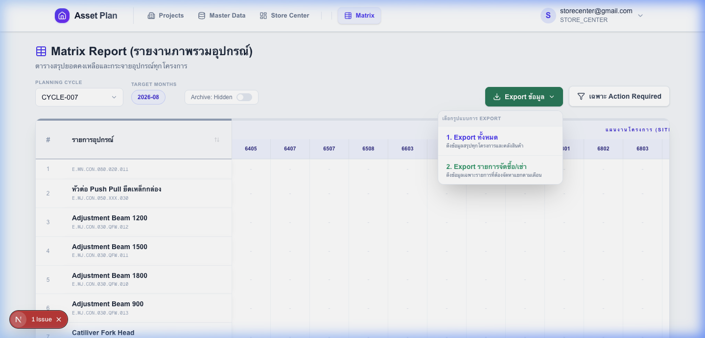

การส่งออกข้อมูล (Export)
คุณสามารถ Export ข้อมูลจากหน้า Matrix Report เพื่อนำไปใช้งานต่อได้ โดยระบบมีตัวเลือก 2 รูปแบบหลัก ดังนี้:
-
1. Export ทั้งหมด (Comprehensive Export)
ใช้เมื่อ: ต้องการข้อมูลดิบทั้งหมดของทุกโครงการ รวมถึงยอดสต็อกในคลังสินค้า (Store Center)
ลักษณะข้อมูล: เป็นตารางขนาดใหญ่ที่แสดงจำนวนอุปกรณ์แยกตามโครงการและเดือน เหมาะสำหรับการทำสรุปรายงานภาพรวมบริษัท (Management Report)
-
2. Export รายการจัดซื้อ/เช่า (Procurement/Rental List)
ใช้เมื่อ: ต้องการรายการที่บริษัทต้อง "จ่ายเงิน" เพื่อจัดหาเพิ่มเติม (Buy/Rent) เท่านั้น
ลักษณะข้อมูล: ระบบจะดึงเฉพาะรายการที่มีความต้องการสุทธิ (Net Requirement) ที่ผ่านการอนุมัติแล้ว และสรุปยอดที่ต้องจัดหาแยกตามเดือน เหมาะสำหรับส่งให้แผนกจัดซื้อ (Purchasing) ดำเนินการต่อทันที
✨ ใหม่: Export จากหน้า Store Center Hub
สามารถส่งออกข้อมูลสถานะการดำเนินการ (Action Status) และหมายเหตุ (Notes) ของพัสดุแต่ละรายการได้โดยละเอียด ช่วยให้ทีมบริหารพัสดุติดตามสถานะได้แม่นยำขึ้น
